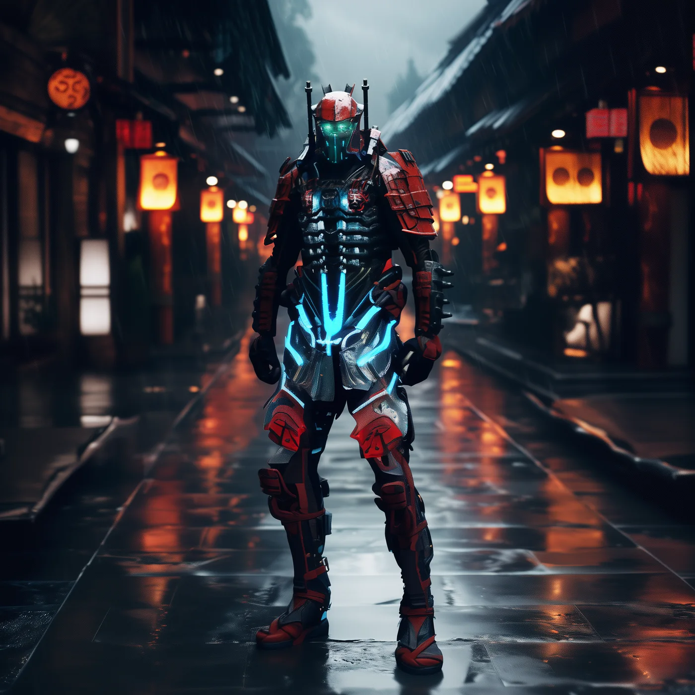

©
©
GENEZYS ARCHIVE · Earth 1 · Legionnaire
Gontra
Prism Custodian

Archive record
Gontra keeps the Prism, the oldest crystal of the Honor Warden, and has learned to fight through its light. The Chromatic Burst blazes into the center of the enemy line and keeps draining the same target. To Gontra, honor is like light through a prism: many colors, one beam, never broken.
Combat signature
Chromatic Burst
150 Cosmara
250 Animus
270 Vitalis
Splinters a chromatic blaze through crystal facets: Deals 140 damage to the enemy in the middle. Drains 40 Cosmara from the same enemy for next 2 rounds.
Genezys 05:06 ™&©2026LEGIONS
Return to LEGIONS